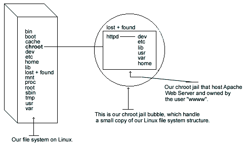

29.17. Apache in a chroot jail
This part focuses on preventing Apache from being used as a point of break-in to the system hosting it. Apache by default runs as a non-root user, which will limit any damage to what can be done as a normal user with a local shell. Of course, allowing what amounts to an anonymous guest account falls rather short of the security requirements for most Apache servers, so an additional step can be taken - that is, running Apache in a chroot jail.
The main benefit of a chroot jail is that the jail will limit the portion of the file system the daemon can see to the root directory of the jail. Additionally, since the jail only needs to support Apache, the programs available in the jail can be extremely limited. Most importantly, there is no need for setuid-root programs, which can be used to gain root access and break out of the jail.

Chrooting apache is no easy task and has a tendency to break things. Before we embark on this, we need to first decide whether it is beneficial for you to do so. Some pros and cons are there, but most certainly not limited to, the following:
The chrooted configuration listed below supposes that you've compiled your Apache server with the external program mod_ssl. The differences in what you've compiled with your Apache web server reside in which libraries and binaries you'll need to copy to the chrooted directory.
: Remember that if you've compiled Apache to use mod_perl, you must copy all the related binaries and Perl libraries to the chrooted directory. Perl resides in /usr/lib/perl5 and in case you use Perl features, copy the Perl directories to /chroot/httpd/usr/lib/perl5/. Don't forget to create the directory /chroot/httpd/usr/lib/perl5 in your chrooted structure before copying.
The following are the necessary steps to run Apache Web Server in a chroot jail:
We must find the shared library dependencies of httpd. These will need to be copied into the chroot jail later. To find the shared library dependencies of httpd, execute the following command:
[root@deep ]/# ldd /usr/sbin/httpd
|
libpam.so.0 =>/lib/libpam.so.0 (0x40016000)
libm.so.6 =>/lib/libm.so.6 (0x4001f000)
libdl.so.2 =>/lib/libdl.so.2 (0x4003b000)
libcrypt.so.1 =>/lib/libcrypt.so.1 (0x4003e000)
libnsl.so.1 =>/lib/libnsl.so.1 (0x4006b000)
libresolv.so.2 =>/lib/libresolv.so.2 (0x40081000)
libdb.so.3 =>/lib/libdb.so.3 (0x40090000)
libc.so.6 =>/lib/libc.so.6 (0x400cb000)
/lib/ld-linux.so.2 =>/lib/ld-linux.so.2 (0x40000000)
|
Add a new UID and a new GID if this is not already done for running Apache httpd. This is important because running it as root defeats the purpose of the jail, and using a different UID that already exists on the system i.e. nobody can allow your services to access each others' resources. Consider the scenario where a web server is running as nobody, or any other overly used UID/GID and compromised. The cracker can now access any other processes running as nobody from within the chroot.
These are sample UID/GIDs. Check the /etc/passwd and /etc/group files for a free UID/GID number. In our configuration we'll use the numeric value 80 and UID/GID www.
The above commands will create the group www with the numerical GID value 80, and the user www with the numerical UID value 80.[root@deep ]/# useradd -c "Apache Server" -u 80 -s /bin/false -r -d /home/httpd www 2>/dev/null || :Set up the chroot environment. First we need to create the chrooted Apache structure. We use /chroot/httpd for the chrooted Apache. The /chroot/httpd is just a directory on a different partition where we've decided to put apache for more security.
[root@deep ]/# /etc/rc.d/init.d/httpd stop
- Only if Apache is already installed and run on your system.
Shutting down http: [ OK ][root@deep ]/# mkdir /chroot/httpdNext, create the rest of directories as follows:
[root@deep ]/# mkdir /chroot/httpd/dev [root@deep ]/# mkdir /chroot/httpd/lib [root@deep ]/# mkdir /chroot/httpd/etc [root@deep ]/# mkdir -p /chroot/httpd/usr/sbin [root@deep ]/# mkdir -p /chroot/httpd/var/run [root@deep ]/# mkdir -p /chroot/httpd/var/log/httpd [root@deep ]/# chmod 750 /chroot/httpd/var/log/httpd/ [root@deep ]/# mkdir -p /chroot/httpd/home/httpdCopy the main configuration directory, the configuration files, the cgi-bin directory, the root directory and the httpd program to the chroot jail: [root@deep ]/# cp -r /etc/httpd /chroot/httpd/etc/ [root@deep ]/# cp -r /home/httpd/cgi-bin /chroot/httpd/home/httpd/ [root@deep ]/# cp -r /home/httpd/your-DocumentRoot /chroot/httpd/home/httpd/ [root@deep ]/# mknod /chroot/httpd/dev/null c 1 3 [root@deep ]/# chmod 666 /chroot/httpd/dev/null [root@deep ]/# cp /usr/sbin/httpd /chroot/httpd/usr/sbin/ We need the /chroot/httpd/etc, /chroot/httpd/dev, /chroot/httpd/lib, /chroot/httpd/usr/sbin /chroot/httpd/var/run, /chroot/httpd/home/httpd and /chroot/httpd/var/log/httpd directories because, from the point of the chroot, we're sitting at /.
If you have compiled your Apache web server with SSL support, you must copy the entire /etc/ssl directory that handles all private and public keys to the chroot jail.
[root@deep ]/# cp -r /etc/ssl /chroot/httpd/etc/ ß require only if you use mod_ssl feature. [root@deep ]/# chmod 600 /chroot/httpd/etc/ssl/certs/ca.crt ß require only if you use mod_ssl feature. [root@deep ]/# chmod 600 /chroot/httpd//etc/ssl/certs/server.crt ß require only if you use mod_ssl feature. [root@deep ]/# chmod 600 /chroot/httpd/etc/ssl/private/ca.key ß require only if you use mod_ssl feature. [root@deep ]/# chmod 600 /chroot/httpd/etc/ssl/private/server.key ß require only if you use mod_ssl feature.